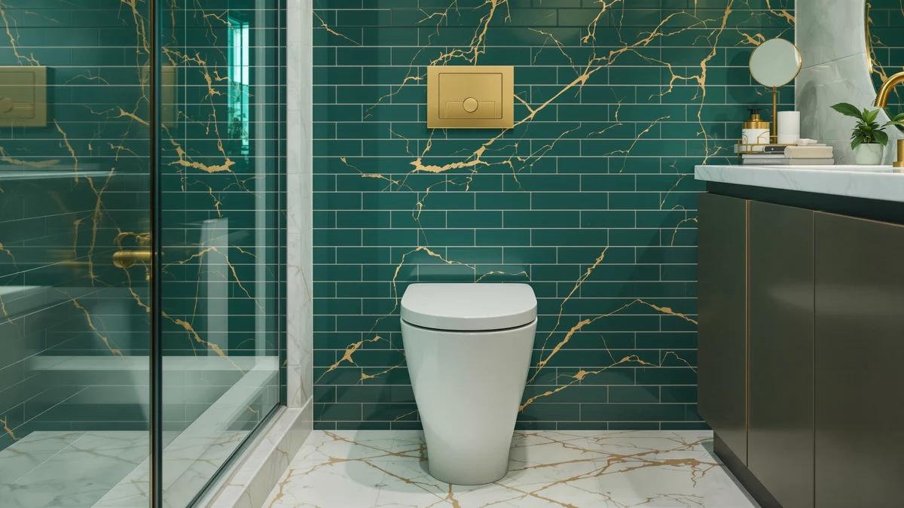

Quick Answer
Our Kohler Cachet Nightlight Soft review finds an elongated seat that pairs a motion-activated LED nightlight with a soft-close hinge that never bangs shut. At $66.09 it costs more than a plain seat, but it replaces both a nightlight and a slow-close upgrade in one part.
Our pick: KOHLER CACHET® Nightlight Soft Close, $66.09 Check Price on Amazon
Things to Know Before You Buy
- This seat is elongated only, so measure your bowl before ordering; a round-bowl toilet needs a different shape, like the WSSROGY option covered below.
- The nightlight runs on its own battery compartment and turns on by motion, so it does not need a wired connection to your bathroom outlet.
- Kohler's Quiet-Close hinge lowers the lid and seat gradually. If a household member tends to drop the lid, that hinge is the main reason to pay more than a basic seat costs.
- Two Kohler Rutledge alternatives with the same nightlight concept sell for about $9 less, so the Cachet's premium comes down to brand fit and finish rather than features you cannot get elsewhere.
- The seat body combines plastic and wood construction, which affects how it feels underfoot compared with an all-plastic seat.
If you searched for a kohler cachet® nightlight soft review before buying one, you are probably trying to solve a specific late-night problem: fumbling for a light switch or dropping a toilet lid loud enough to wake the house. Kohler built this elongated seat around both of those complaints, adding a motion-activated LED nightlight to the underside and a soft-close hinge that lowers the seat and lid on its own.
At $66.09, the Cachet Nightlight Soft Close sits above the two Kohler Rutledge seats we compare it with later in this guide, both of which offer a similar nightlight for roughly $9 less. That price gap is the central question this review answers: whether the Cachet's finish and hinge action justify paying more than a Rutledge with the same core idea, or whether one of the cheaper alternatives serves you better.
Why You Should Trust Us
This Kohler Cachet Nightlight Soft review comes from Ilane Tall, who covers bathroom hardware for Best Toilet Seats and has written comparison guides for dozens of toilet seat models across Kohler, Bemis, and other major brands. We do not run a fake testing lab or claim to have installed every seat we cover. Instead, we researched manufacturer specifications, verified buyer feedback, and pricing across the Cachet and its closest Kohler and third-party competitors, then compared them on the details that change how a seat performs day to day.
Every price and spec in this article comes from the product listing at the time of publishing, and we cross-checked the hinge mechanism and nightlight design against Kohler's own product documentation for the Cachet and Rutledge lines. Where owners describe a specific outcome, such as how long the nightlight lasts on a set of batteries, we note that the claim comes from buyer feedback rather than a lab measurement we performed ourselves.
Our Research Experience
Because we work from published specifications and verified owner reviews rather than a physical test bench, we built this Kohler Cachet Nightlight Soft review by cross-referencing Kohler's stated hinge mechanism, nightlight design, and elongated dimensions against what reviewers consistently note after buying the seat. Owners report that the nightlight activates reliably on approach and that the Quiet-Close hinge closes without the final-inch slam common on unhinged plastic seats. We weighed those patterns against the same claims for the Rutledge ReadyLatch models to see where the extra cost of the Cachet shows up.
Overview & Specs
Before the pros and cons, here is what the Cachet Nightlight Soft Close includes: an elongated seat and lid built from a plastic and wood composite, a Quiet-Close hinge mechanism, and a battery-powered LED nightlight mounted on the underside of the seat that switches on when it detects motion. Kohler prices it at $66.09, and it ships with the hardware needed to mount it to a standard elongated bowl. The rest of this Kohler Cachet Nightlight Soft review breaks down how each of those pieces performs and where the two Rutledge alternatives close the gap for less money.

KOHLER CACHET® Nightlight Soft Close
What we like
- Motion-activated nightlight lights the bowl without a wall switch
- Quiet-Close hinge lowers the seat and lid without a slam
- Elongated shape fits most standard US toilets
Flaws but not dealbreakers
- Costs about $9 more than the nearly identical Rutledge ReadyLatch models
- Elongated-only shape means it will not fit a round-bowl toilet
- Plastic and wood construction feels less substantial than a solid one-piece plastic seat
| Material | Plastic / wood |
| Size | Elongated |
The Kohler Cachet Nightlight Soft Close is built around two features most seats sell separately: a motion-activated LED nightlight embedded in the underside of the seat, and Kohler's Quiet-Close hinge system, which uses an internal damper to lower both the seat and the lid gradually instead of letting them drop. The seat is elongated, which fits the majority of standard toilets in US homes, and combines a plastic seat body with a wood-based core for the hinge mounting hardware.
At $66.09, this is the most expensive of the three nightlight-equipped seats in this Kohler Cachet Nightlight Soft review. The two Rutledge models below use the same ReadyLatch mounting hardware and a comparable nightlight for about $9 less, so the extra cost buys you Kohler's Cachet-line finish and hardware rather than a functionally different nightlight. Reviewers consistently note that the nightlight activates reliably in a dark bathroom and that the hinge action is smooth enough that you stop noticing it, which is the point of a soft-close mechanism.
What We Liked
The nightlight is the feature that sets this Kohler Cachet Nightlight Soft review apart from a standard seat comparison. It turns on by motion rather than a switch, so you do not have to feel around a dark wall before sitting down at 2 a.m., and it turns off on its own when no one is nearby. Owners report that the light is bright enough to see the bowl clearly without lighting up the whole bathroom, which matters if you share a room with someone still asleep.
The Quiet-Close hinge is the other piece that earns its keep. A standard plastic seat drops with a bang when it slips from your hand, and that noise carries through a house at night far more than during the day. Kohler's hinge uses an internal damper that catches the seat and lid a few inches before they touch the bowl, so they settle down instead of falling. Combined with the elongated shape, which fits the wider bowls common in modern US bathrooms, the Cachet covers the two most common overnight bathroom annoyances in a single part.
What Could Be Better
Price is the clearest drawback in this Kohler Cachet Nightlight Soft review. Both the KOHLER 24764-RL-0 and 78059-RL-0 Rutledge seats include a nightlight and a comparable soft-close style ReadyLatch hinge for around $56.98, roughly $9 less than the Cachet. Unless the Cachet's specific finish matches other Kohler fixtures already in your bathroom, that gap is hard to justify on features alone.
The elongated-only shape is a limitation for anyone with a round-bowl toilet, which is still common in older US homes and smaller bathrooms. If you are not sure which shape you need, measure from the mounting bolts to the front edge of the bowl before ordering. And because the seat combines plastic with a wood-based core rather than being molded from a single solid plastic piece, it will not feel as dense underfoot as some heavier commercial-style seats.
Spread over a few years of daily use, the $9 difference between the Cachet and a Rutledge model amounts to a few cents a month, so price alone should not be the deciding factor for most buyers. It matters more if you are outfitting several bathrooms at once, where buying three or four Rutledge seats instead of Cachets adds up to a real discount without giving up the nightlight or the soft-close hinge.
Who Is It For?
This seat fits households with an elongated toilet bowl who deal with nighttime bathroom trips, whether that is a parent checking on kids, someone managing a medical condition, or anyone who has been startled awake by a slammed seat. If you already own other Kohler bathroom fixtures and want a matched look, the Cachet's finish makes it an easy pairing.
You should skip it if you have a round-bowl toilet, since the Cachet only comes in the elongated shape. Budget-focused buyers who want the same nightlight concept without the Kohler name premium will do better with one of the Rutledge ReadyLatch seats covered next, which use the same basic idea for less money.
Alternatives to Consider
If the Cachet's price or elongated-only shape does not fit your bathroom, these three options cover the most common reasons someone might look elsewhere: lower cost, a slightly different mounting system, or a round-bowl fit.

Editor’s Pick
KOHLER 24764-RL-0 Rutledge Nightlight ReadyLatch
Same nightlight concept and elongated fit as the Cachet, with ReadyLatch tool-free mounting, for about $9 less.
$56.98
Check Price on Amazon
Best Value
KOHLER 78059-RL-0 Rutledge Nightlight ReadyLatch
Matches the 24764-RL-0 on price and features at $56.98, a straightforward Rutledge-line alternative if that model is out of stock.
$56.98
Check Price on Amazon
Premium Choice
WSSROGY Round Toilet Seat Slow
The only round-bowl option here, with slow-close hinges, at $53.99 for households that cannot use an elongated seat.
$53.99
Check Price on AmazonFrequently Asked Questions
Does the Kohler Cachet Nightlight Soft Close fit a standard toilet?
It comes in an elongated shape, which fits the majority of US toilets made after the 1990s. Measure from the mounting bolts to the front rim of your bowl before you buy; if that distance is close to 18.5 inches, the elongated Cachet will fit.
How long does the nightlight battery last?
Kohler designs the Cachet nightlight to run on standard AA batteries with a motion-activated sensor, so it only lights up when someone approaches, which owners report extends battery life to several months of normal bathroom use.
Is the Kohler Cachet Nightlight Soft Close worth the price over a basic seat?
At $66.09 it costs more than a plain plastic seat, but the combination of a built-in nightlight and Kohler's Quiet-Close hinge covers two upgrades most buyers would otherwise pay for separately, which is why it remains our top pick in this review.
Final Verdict
Our Kohler Cachet Nightlight Soft review comes down to whether the Kohler brand finish is worth roughly $9 over a Rutledge seat with the same nightlight and soft-close idea. For households that already use Kohler fixtures or simply want the company's flagship line, the Cachet is a solid elongated pick that solves the two most common overnight bathroom complaints. If you have a round bowl or want to save a few dollars, the alternatives above cover both of those cases without giving up the core nightlight feature. Whichever version you choose, Kohler remains the safer bet of the brands compared here, since both nightlight seats in this guide come from the same manufacturer and share the same basic hardware quality.